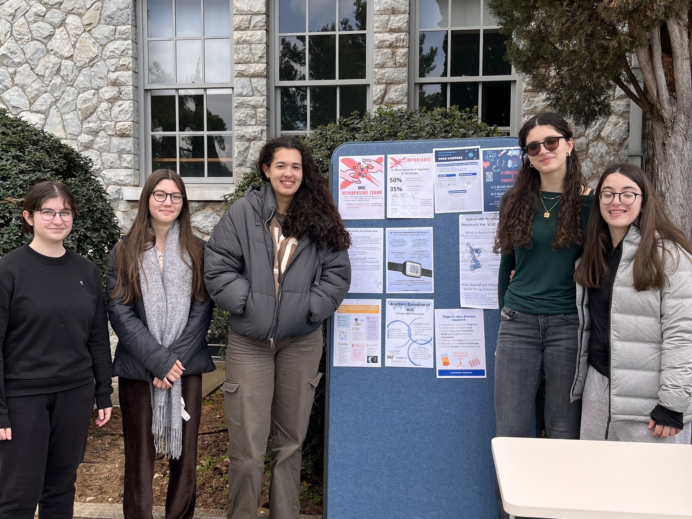
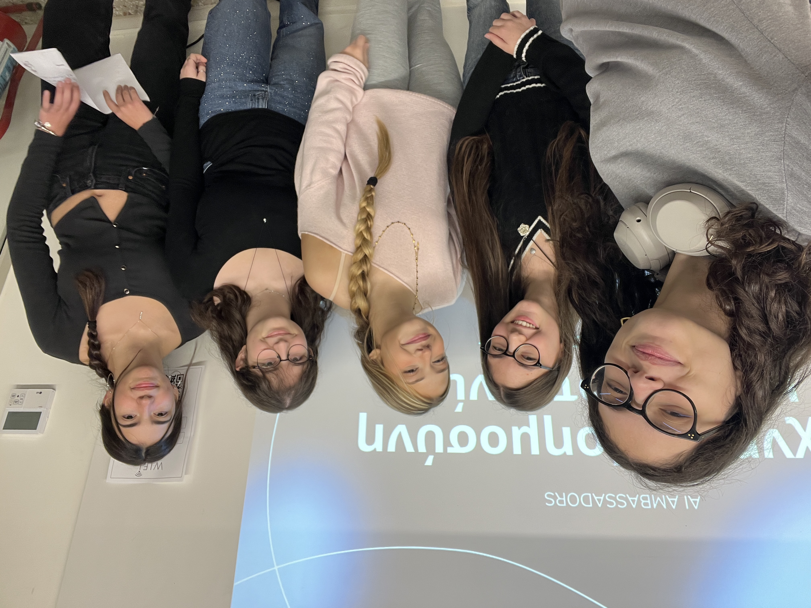
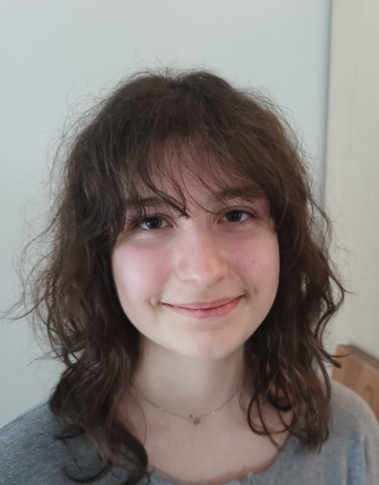

AI in Mental Health
In collaboration with the Wellbeing club, we showcased the capabilities and limitations of AI, encouraging the responsible use of these tools and real human connection.

A student-led team exploring how artificial intelligence works and how it can be used ethically in our everyday lives
AI Ambassadors is a student-led team that explores Artificial Intelligence in a thorough and thoughtful way. Our goal is to understand how AI systems work, how they're used in the real world, and how they affect our everyday lives.
Through workshops, collaborations, and presentations, we make AI more understandable for our school community while spreading awareness about its ethical implications and encouraging responsible use.
Founded in 2024 as a student-run club at Anatolia College. Created and entirely led and run by students for students.
We don't just use AI, we ask questions about how it's used.
From healthcare to literature, we explore AI where it matters.
Interactive workshops · Debates · Outreach events
Year Founded
Highlighting our key initiatives that brought AI education to diverse communities and sparked real conversations about its implications.
In collaboration with the Wellbeing club, we showcased the capabilities and limitations of AI, encouraging the responsible use of these tools and real human connection.
Introduced students to neural networks, computer vision, NLP, and image generation. Then we challenged them to set their own AI ethics rules through interactive discussions.
In collaboration with the Students4Rare club, we explored how AI can assist in diagnosing, monitoring, and treating rare diseases and the societal impacts of such tools.
During a Literature Festival, we explored generative AI and NLP, as well as the ethical questions of authorship, originality, and the correct use of AI tools in the context of literature.



From videos to articles and posters, our ambassadors communicate AI topics in creative ways.
A breakdown of the rules of the newly-established EU AI Act and why they are necessary.
Watch ↗A critical look at attribution, accuracy, and intellectual honesty in the age of large language models.
Read ↗An exploration of how Convolutional Neural Networks are making cancer diagnoses faster and more accurate than ever before.
Read ↗Our leadership team ensures the organisation and longevity of the AI Ambassadors initiative.
Annie founded AI Ambassadors to bring AI conversations into her community and turn students into ambassadors for change. Now an engineering student at Stanford University, she is driven by a belief that technology can change the world and that student voices must be a part of that conversation.
Nina is a 12th-grade student at Anatolia College. She joined AI Ambassadors because she is interested in the ethical implications of AI’s applications in the real world, and what is being done to ensure its responsible and ethical use. She also likes mathematics, reading, crocheting, and playing the guitar.

Christina is an 11th-grade student at Anatolia College. She is mainly interested in biology and biotechnology, but also enjoys writing and reading. She joined the AI Ambassadors because she wants to understand how AI works and how it can be applied to biology, medicine, and the future of healthcare.